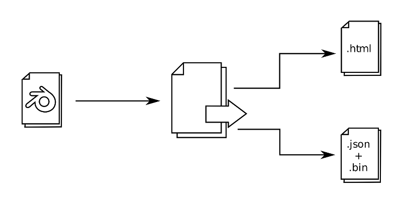

工作流程¶
开发任何产品是一个创造性的过程，需要许多参与者谁拥有不同的技能和经验。然而不论事情是多么的复杂，是它总是能够分离出许多生产阶段，其中的大部分资产和源代码是创作的目标。
Any work with the Blend4Web engine should start with running Blender.
Select Blend4Web from the render engine list at the top panel in the main Blender window, and you will see how the program interface have changed. Some parameters will disappear, and new ones will take their place. The most important of these new parameters are located in the Properties window (usually placed at the right side of the main window), on the Render panel.

注解
If the Development Tools tab shows the Development server is off message, this means that the development server is not working. It can be enabled with the Start Server button on the same panel. The server can also be configured to run on startup with the Run On Startup option found in the add-on settings (User Preferences → Add-Ons → Blend4Web).
If any problems occur as you try to run development server, please consult the Problems and Solutions chapter.
The SDK Index button opens the index page that can be found by this address: http://localhost:6687.
The Fast Preview button opens the Scene Viewer and loads the scene that is open in Blender at the moment. This is a useful feature for planning and debugging your scenes.
The Project Manager button opens the Project Manager — a powerful and easy to use tool for working with Blend4Web projects. Using Project Manager is the most simple way to start working with Blend4Web.
当使用Blend4Web工作流程如下：
创建一个新项目
创建场景
准备一个在Blend4Web中使用的场景
导出场景。
应用程序开发
构建项目
项目部署。
创建一个新项目¶
要在一个项目上工作，首先就是要创建它。
The easiest way to create a new project is to use the Project Manager. To do it, run the Project Manager (either from Blender or from index page) and press the Create New Project button at the top of the Project Manager’s main window.
另一种方法是使用 project.py 命令行脚本，这个更通用。这个脚本的工作描述 在这里.
创建场景¶
场景都包含在blend文件。项目管理器可以在创建新项目时自动创建一个基本的blend场景文件。额外的blend文件可以被创建并附加到一个项目。
Blend4Web的场景都跟Blender里创建场景都是以同样的方式，只有轻微的差异。处理一个场景的工作过程可以分为几个阶段：
应该注意的是，并不是每一个项目都需要所有这些阶段。更简单的场景可能除了默认的功能不会有任何动画甚至任何的材质。
各个阶段的顺序也不是严格的，可以一定程度的互换（例如，你不可能在创建物体钱进行动画，但你可以预先为它创建一个材质）。
除了一般的阶段如建模，贴图，动画等，场景应该在做好在引擎中的准备。
一般建议：
我们强烈建议将Blend文件保存在
projects/project_name/blender目录中。程序中不需要加载的辅助文件 （例如，引用）等，也该在这个文件夹下。图像和媒体文件应该是在外部和位于
projects/project_name/assets目录。你将导出的文件应包含实际所需 （对象、 材料、 材质、 动画等） 的应用程序中的资源。
场景组件应该有不同的识别名称。他们不应该叫 “Cube.001”, “Material” 或者 “Armature”.
- We recommend you to link components from other files (libraries).
准备一个在Blend4Web中使用的场景¶
除了一般的阶段如建模，贴图，动画等，场景应该在做好在引擎中的准备。
导出场景¶
导出过程将场景从Blender格式转换为 Blend4Web 所使用的格式之一。
{kind=link}
有两种格式 ︰ JSON 和 HTML。
HTML格式用于简单的单机应用中，所有的资源都打包成可以很容易地部署到一个网页的一个HTML文件。
JSON格式，可用于创建各种项目，但它也提供了许多额外的功能使得它可以创建需要编程的复杂项目。格式的不同和导出选项在 Export Formats 一章描述。
若要导出场景，请从 文件 > 导出 菜单选择 Blend4Web (.json) 或 Blend4Web (.html) ，或者在操作符搜索菜单（按 空格键 的时候出现）输入``b4w export``
注解
如果场景使用Blender功能尚不由 Blend4Web 引擎支持，可能会在导出过程中发生错误。在导出错误中列出 此表.
导出选项中详细描述在 相应章节.
应用程序开发¶
本节仅适用于除网络播放器的HTML和网络播放器JSON的其他项目类型。
在此阶段的应用已经被创建。逻辑场景加载和用户交互使用JavaScript编写。应用程序开发人员笔记中给出了 相应章节.
构建项目¶
一个项目的开发完成之后，应当构建以便它以后可以在SDK之外使用。
项目构建可以通过点击在 项目管理器 中的 build project 链接执行。
构建项目之前，您可能希望将用在项目中的媒体资源 转换 ，可以最大限度地缩减大小。
项目部署¶
项目开发完成后，该项目可被部署，这样它可以在Blend4Web SDK之外使用。项目部署通过点击 项目管理器 主窗口的项目类右边栏中的 Operations 命令列表里的 deploy project 链接来执行。
点击这个链接会使得项目管理器执行所有必须的操作和部署项目。
部署的项目都有一个包含所有项目文件归档的形式。这个档案可以保存在硬盘的任何位置，只需通过你使用的浏览器的标准保存文件对话框。
一个完整的项目可以放置在Web服务器上。
要做到这一点，从项目管理器下载存档然后提取项目文件，并将其上传到Web服务器（同时保留内部文件结构）可以通过FTP，SSH或服务器支持的任何其他文件传输协议的方式。这样做后，你只需要把这个项目放在一个网页中使用，例如一个 iframe 容器。